Next: 基本的な線形混合効果モデルの拡張 Up: S-PLUSによる混合効果モデル解析 Previous: グループ化データの構造
被験者によってグループ化されたデータ Orthodont に対し，以下のように3つのモデルをあてはめてみる。
> library(nlme)
> data(Orthodont)
> library(lattice)
> fm1 <- lm(distance ~ age, Orthodont)
> fm2 <- update(fm1, formula = distance ~ Sex*age)
> fm3 <- update(fm2, formula = . ~ . - Sex)
> summary(fm3)
Call:
lm(formula = distance ~ age + Sex:age, data = Orthodont)
Residuals:
Min 1Q Median 3Q Max
-5.7424 -1.2424 -0.1893 1.2681 5.2669
Coefficients:
Estimate Std. Error t value Pr(>|t|)
(Intercept) 16.76111 1.08613 15.432 < 2e-16 ***
age 0.74767 0.09807 7.624 1.16e-11 ***
age:SexFemale -0.21473 0.03923 -5.474 3.02e-07 ***
---
Signif. codes: 0 ‘***’ 0.001 ‘**’ 0.01 ‘*’ 0.05 ‘.’ 0.1 ‘ ’ 1
Residual standard error: 2.249 on 105 degrees of freedom
Multiple R-squared: 0.4215, Adjusted R-squared: 0.4105
F-statistic: 38.26 on 2 and 105 DF, p-value: 3.31e-13
モデル fm3 について，診断プロットを描画してみる。
> par(mfrow=c(2,2)) > plot(fm3)
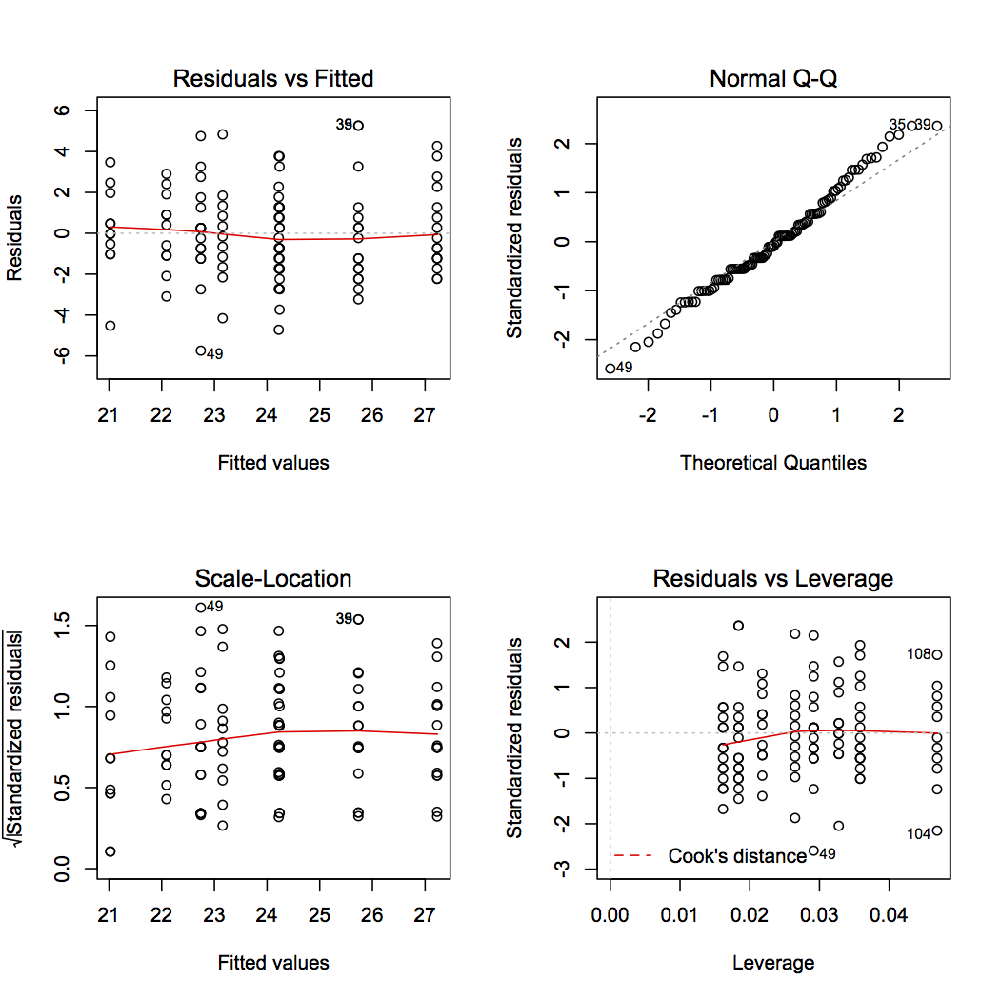
Q-Qプロットから，標準化残差は正規分布よりいくぶん裾が広いことがわかる。
次に，被験者ごとの残差プロット（箱ひげ図）を描画してみる。
> bwplot(getGroups(Orthodont) ~ resid(fm3))
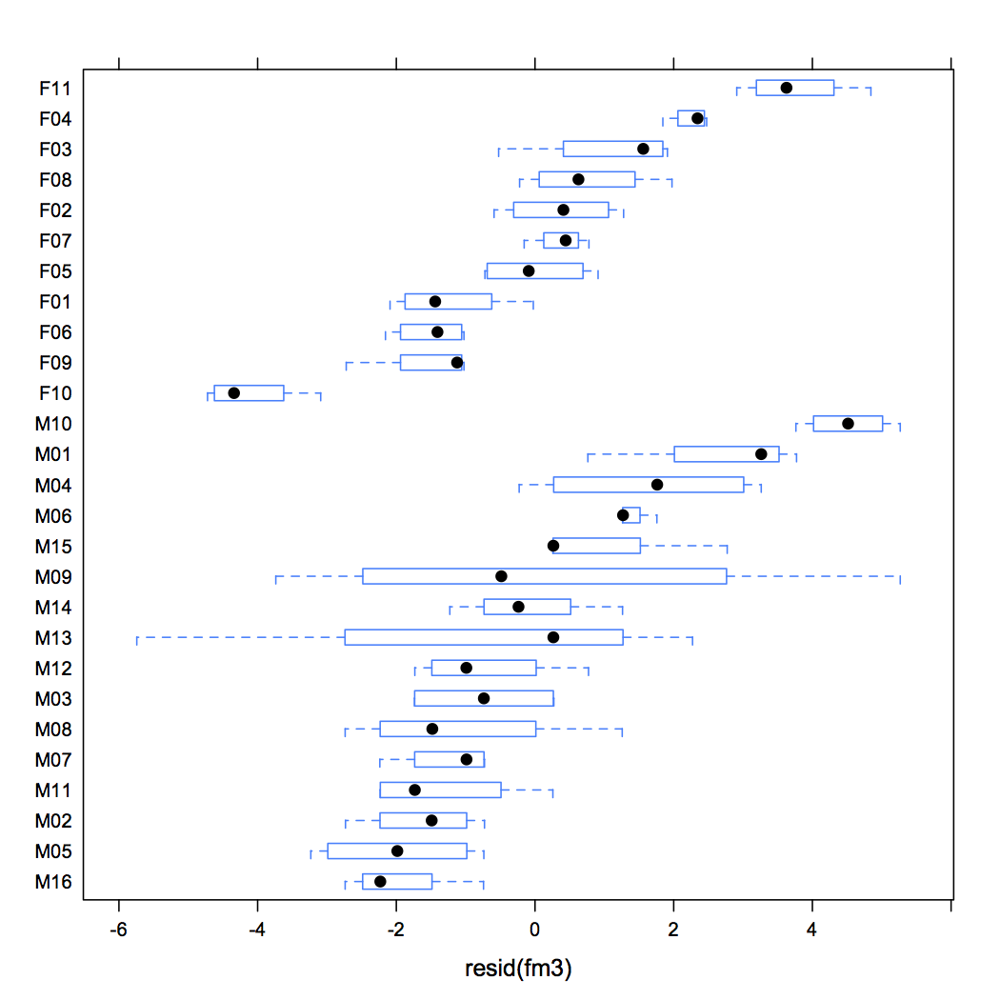
被験者によって残差の分布が大きく異なり，同じ被験者は同じ方向の残差を持つ傾向にある。
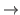 「個体効果」を考慮する必要性を示している。
データ Orthodonto は groupedData クラスなので，lmList の formula にグループ化変数を指定する（| Subject）必要はない。
> fm4 <- lmList(distance ~ age, Orthodont)
> fm4
Call:
Model: distance ~ age | Subject
Data: Orthodont
Coefficients:
(Intercept) age
M16 16.95 0.550
M05 13.65 0.850
M02 14.85 0.775
M11 20.05 0.325
M07 14.95 0.800
M08 19.75 0.375
M03 16.00 0.750
M12 13.25 1.000
M13 2.80 1.950
M14 19.10 0.525
M09 14.40 0.975
M15 13.50 1.125
M06 18.95 0.675
M04 24.70 0.175
M01 17.30 0.950
M10 21.25 0.750
F10 13.55 0.450
F09 18.10 0.275
F06 17.00 0.375
F01 17.25 0.375
F05 19.60 0.275
F07 16.95 0.550
F02 14.20 0.800
F08 21.45 0.175
F03 14.40 0.850
F04 19.65 0.475
F11 18.95 0.675
Degrees of freedom: 108 total; 54 residual
Residual standard error: 1.31004
ここで，切片と傾きを pairs によってプロットしてみる。
> pairs(fm4)
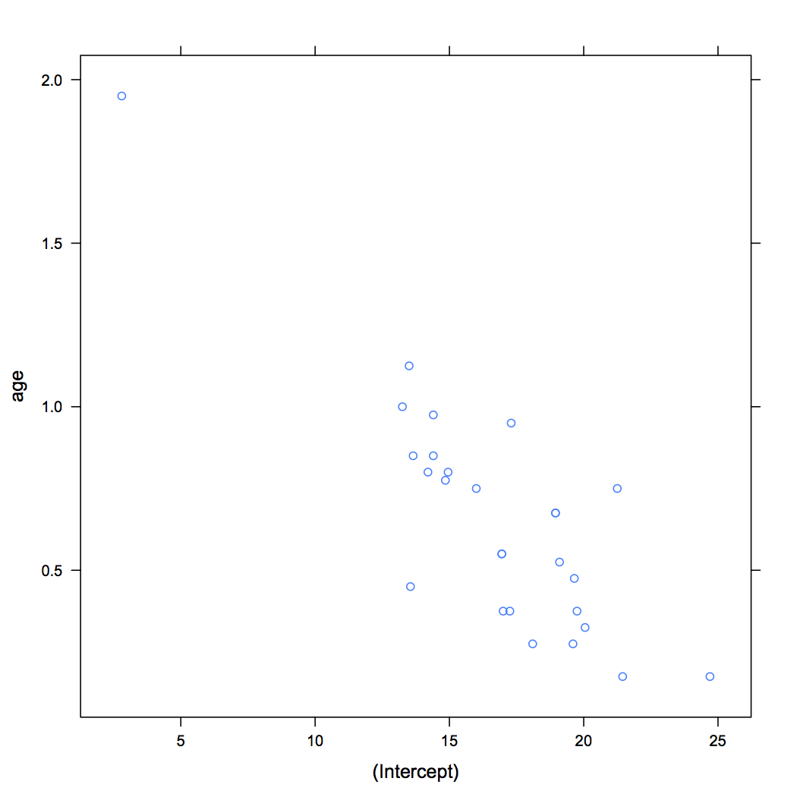
切片と傾きの相関が（外れ値を考慮しても）かなり高いことがわかる。
これは，説明変数 age が中心化されていないため，切片が age = 0 の予測値を表していることと関連している（初期値と成長のスピードは強く相関している）。
これを解消するため，age を11で中心化してみる。
> fm5 <- lmList(distance ~ I(age-11), Orthodont)
> fm5
Call:
Model: distance ~ I(age - 11) | Subject
Data: Orthodont
Coefficients:
(Intercept) I(age - 11)
M16 23.000 0.550
M05 23.000 0.850
M02 23.375 0.775
M11 23.625 0.325
M07 23.750 0.800
M08 23.875 0.375
M03 24.250 0.750
M12 24.250 1.000
M13 24.250 1.950
M14 24.875 0.525
M09 25.125 0.975
M15 25.875 1.125
M06 26.375 0.675
M04 26.625 0.175
M01 27.750 0.950
M10 29.500 0.750
F10 18.500 0.450
F09 21.125 0.275
F06 21.125 0.375
F01 21.375 0.375
F05 22.625 0.275
F07 23.000 0.550
F02 23.000 0.800
F08 23.375 0.175
F03 23.750 0.850
F04 24.875 0.475
F11 26.375 0.675
Degrees of freedom: 108 total; 54 residual
Residual standard error: 1.31004
> pairs(fm5)
すると，切片と傾きのプロットは次のようになり，相関が解消される。
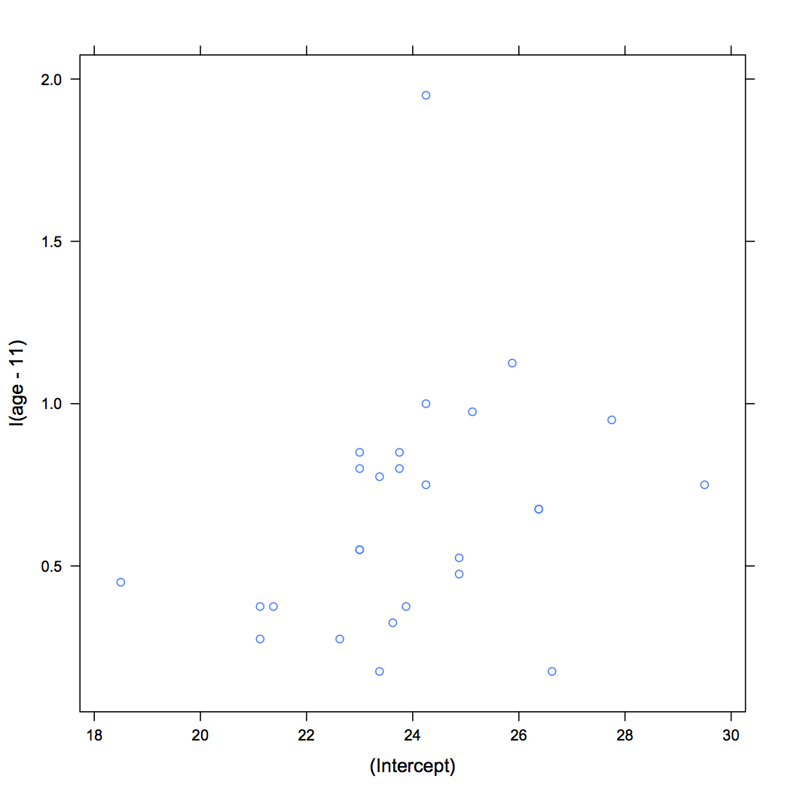
次に，これら切片と傾きの信頼区間を算出してみる。
> intervals(fm5)
, , (Intercept)
lower est. upper
M16 21.68676 23.000 24.31324
M05 21.68676 23.000 24.31324
M02 22.06176 23.375 24.68824
M11 22.31176 23.625 24.93824
M07 22.43676 23.750 25.06324
M08 22.56176 23.875 25.18824
M03 22.93676 24.250 25.56324
M12 22.93676 24.250 25.56324
M13 22.93676 24.250 25.56324
M14 23.56176 24.875 26.18824
M09 23.81176 25.125 26.43824
M15 24.56176 25.875 27.18824
M06 25.06176 26.375 27.68824
M04 25.31176 26.625 27.93824
M01 26.43676 27.750 29.06324
M10 28.18676 29.500 30.81324
F10 17.18676 18.500 19.81324
F09 19.81176 21.125 22.43824
F06 19.81176 21.125 22.43824
F01 20.06176 21.375 22.68824
F05 21.31176 22.625 23.93824
F07 21.68676 23.000 24.31324
F02 21.68676 23.000 24.31324
F08 22.06176 23.375 24.68824
F03 22.43676 23.750 25.06324
F04 23.56176 24.875 26.18824
F11 25.06176 26.375 27.68824
, , I(age - 11)
lower est. upper
M16 -0.03729682 0.550 1.1372968
M05 0.26270318 0.850 1.4372968
M02 0.18770318 0.775 1.3622968
M11 -0.26229682 0.325 0.9122968
M07 0.21270318 0.800 1.3872968
M08 -0.21229682 0.375 0.9622968
M03 0.16270318 0.750 1.3372968
M12 0.41270318 1.000 1.5872968
M13 1.36270318 1.950 2.5372968
M14 -0.06229682 0.525 1.1122968
M09 0.38770318 0.975 1.5622968
M15 0.53770318 1.125 1.7122968
M06 0.08770318 0.675 1.2622968
M04 -0.41229682 0.175 0.7622968
M01 0.36270318 0.950 1.5372968
M10 0.16270318 0.750 1.3372968
F10 -0.13729682 0.450 1.0372968
F09 -0.31229682 0.275 0.8622968
F06 -0.21229682 0.375 0.9622968
F01 -0.21229682 0.375 0.9622968
F05 -0.31229682 0.275 0.8622968
F07 -0.03729682 0.550 1.1372968
F02 0.21270318 0.800 1.3872968
F08 -0.41229682 0.175 0.7622968
F03 0.26270318 0.850 1.4372968
F04 -0.11229682 0.475 1.0622968
F11 0.08770318 0.675 1.2622968
図にするとわかりやすい。 切片の個体間変動を特に考慮する必要があることが明らかである。
> plot(intervals(fm5))
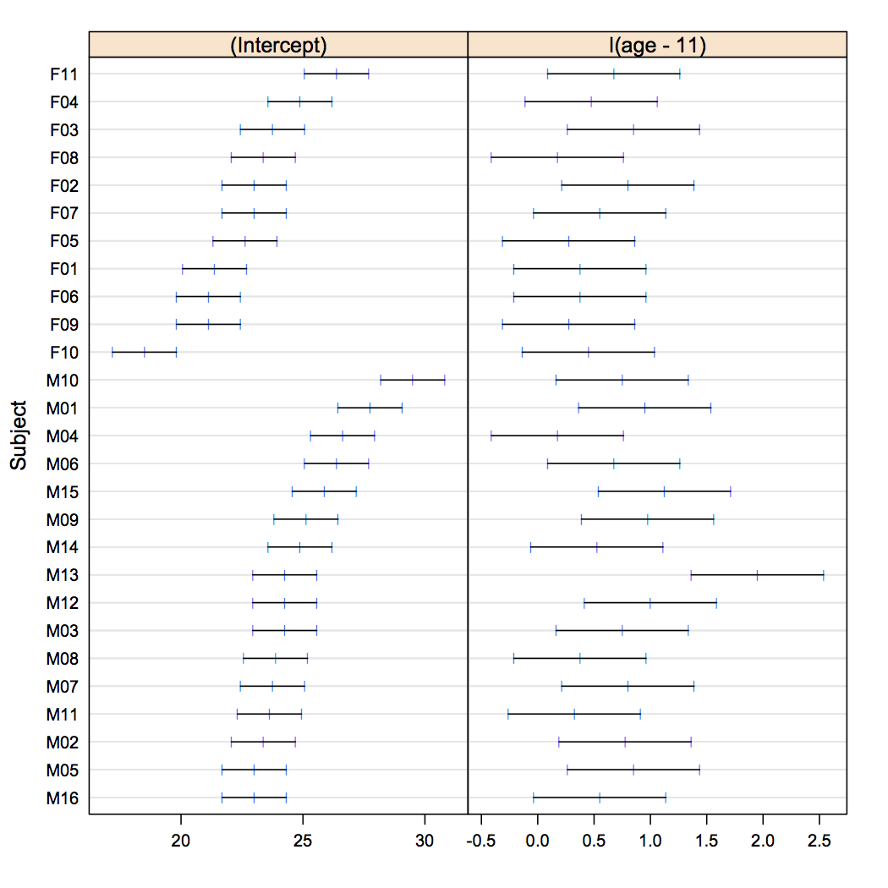
主な lme() のメソッドは次の通り：
| ACF | グループ内残差の経験的自己相関係数 |
| anova | 尤度比検定 |
| augPred | 観測値から得られた当てはめ値 |
| coef | グループ化した異なったレベルのための推定係数 |
| fitted | グループ化した異なったレベルのためのあてはめ値 |
| fixef | 固定効果 |
| intervals | モデルパラメータの信頼区間 |
| logLik | 収束時の対数尤度関数 |
| pairs | 係数あるいは変量効果の散布図行列 |
| plot | 診断プロット |
| predict | グループ化した異なったレベルの予測値 |
| あてはめに関する情報の要約 | |
| qqnorm | 正規確率プロット |
| ranef | 変量効果 |
| resid | グループ化した異なったレベルのための残差 |
| summary | あてはめに関する詳細な情報 |
| update | lme のあてはめの更新 |
| Variogram | グループ内残差のセミバリオグラム |
データ Orthodont は groupedData クラスである。 また，lmList の実行結果がオブジェクトとして存在すれば（fm5），以下のようにしてもよい。 いずれも同じ結果を返す。
> fm6 <- lme(distance ~ I(age - 11), data = Orthodont, random = ~ I(age - 11) | Subject)
> fm6 <- lme(distance ~ I(age - 11), data = Orthodont)
> fm6 <- lme(fm5)
> fm6
Linear mixed-effects model fit by REML
Data: Orthodont
Log-restricted-likelihood: -221.3183
Fixed: distance ~ I(age - 11)
(Intercept) I(age - 11)
24.0231481 0.6601852
Random effects:
Formula: ~I(age - 11) | Subject
Structure: General positive-definite, Log-Cholesky parametrization
StdDev Corr
(Intercept) 2.1343294 (Intr)
I(age - 11) 0.2264278 0.503
Residual 1.3100400
Number of Observations: 108
Number of Groups: 27
さらに，切片と傾きに性差があるかどうかを以下のモデルで検討する。
> fm7 <- update(fm6, fixed = distance ~ Sex * I(age - 11))
> summary(fm7)
Linear mixed-effects model fit by REML
Data: Orthodont
AIC BIC logLik
448.5817 469.7368 -216.2908
Random effects:
Formula: ~I(age - 11) | Subject
Structure: General positive-definite, Log-Cholesky parametrization
StdDev Corr
(Intercept) 1.8303271 (Intr)
I(age - 11) 0.1803454 0.206
Residual 1.3100396
Fixed effects: distance ~ Sex + I(age - 11) + Sex:I(age - 11)
Value Std.Error DF t-value p-value
(Intercept) 24.968750 0.4860008 79 51.37595 0.0000
SexFemale -2.321023 0.7614169 25 -3.04829 0.0054
I(age - 11) 0.784375 0.0859995 79 9.12069 0.0000
SexFemale:I(age - 11) -0.304830 0.1347353 79 -2.26243 0.0264
Correlation:
(Intr) SexFml I(-11)
SexFemale -0.638
I(age - 11) 0.102 -0.065
SexFemale:I(age - 11) -0.065 0.102 -0.638
Standardized Within-Group Residuals:
Min Q1 Med Q3 Max
-3.168078591 -0.385939133 0.007103656 0.445154532 3.849463486
Number of Observations: 108
Number of Groups: 27
これにもとづくあてはめ値は fitted() によって得られる。 ここで，引数 levels = 1（デフォルト）とすれば，固定効果の値のみにもとづくあてはめ値を，levels = 0 とすれば，変量効果も考慮したあてはめ値が返される。
> fitted(fm7, level = 0:1)
fixed Subject
1 22.61563 24.84572
2 24.18438 26.57649
3 25.75313 28.30725
4 27.32188 30.03802
5 22.61563 21.27478
6 24.18438 22.79641
7 25.75313 24.31803
8 27.32188 25.83966
9 22.61563 22.03311
10 24.18438 23.56449
11 25.75313 25.09588
12 27.32188 26.62726
13 22.61563 24.46451
14 24.18438 25.75133
15 25.75313 27.03814
16 27.32188 28.32495
17 22.61563 20.90249
18 24.18438 22.45429
19 25.75313 24.00610
20 27.32188 25.55790
21 22.61563 23.88527
22 24.18438 25.43272
23 25.75313 26.98017
24 27.32188 28.52762
25 22.61563 21.57351
26 24.18438 23.11840
27 25.75313 24.66330
28 27.32188 26.20819
29 22.61563 21.99187
30 24.18438 23.31291
31 25.75313 24.63395
32 27.32188 25.95500
33 22.61563 22.60752
34 24.18438 24.28229
35 25.75313 25.95705
36 27.32188 27.63182
37 22.61563 26.47272
38 24.18438 28.14284
39 25.75313 29.81295
40 27.32188 31.48307
41 22.61563 21.81724
42 24.18438 23.10495
43 25.75313 24.39267
44 27.32188 25.68038
45 22.61563 21.84919
46 24.18438 23.51420
47 25.75313 25.17920
48 27.32188 26.84421
49 22.61563 21.15031
50 24.18438 23.32308
51 25.75313 25.49584
52 27.32188 27.66861
53 22.61563 22.72716
54 24.18438 24.15480
55 25.75313 25.58244
56 27.32188 27.01008
57 22.61563 23.13140
58 24.18438 24.90616
59 25.75313 26.68091
60 27.32188 28.45567
61 22.61563 21.12319
62 24.18438 22.51465
63 25.75313 23.90610
64 27.32188 25.29756
65 21.20909 20.20973
66 22.16818 21.07931
67 23.12727 21.94889
68 24.08636 22.81848
69 21.20909 21.27124
70 22.16818 22.41092
71 23.12727 23.55060
72 24.08636 24.69027
73 21.20909 21.86869
74 22.16818 23.05491
75 23.12727 24.24113
76 24.08636 25.42735
77 21.20909 23.09591
78 22.16818 24.11142
79 23.12727 25.12694
80 24.08636 26.14246
81 21.20909 21.34035
82 22.16818 22.18951
83 23.12727 23.03868
84 24.08636 23.88784
85 21.20909 19.99832
86 22.16818 20.86130
87 23.12727 21.72427
88 24.08636 22.58725
89 21.20909 21.45516
90 22.16818 22.46121
91 23.12727 23.46727
92 24.08636 24.47333
93 21.20909 22.04815
94 22.16818 22.86368
95 23.12727 23.67921
96 24.08636 24.49475
97 21.20909 20.07189
98 22.16818 20.88141
99 23.12727 21.69094
100 24.08636 22.50047
101 21.20909 17.72334
102 22.16818 18.55704
103 23.12727 19.39073
104 24.08636 20.22443
105 21.20909 24.21723
106 22.16818 25.37929
107 23.12727 26.54134
108 24.08636 27.70339
同じく，残差は resid() によって得られる。 デフォルトでは，実測値と予測値の差そのものが残差として返される。
> resid(fm7)
M01 M01 M01 M01 M02 M02 M02 M02 M03 M03 M03 M03
1.15428269 -1.57648588 0.69274556 0.96197700 0.22521745 -0.29640707 -1.31803159 0.66034388 0.96689044 -1.06449370 -1.09587783 0.87273803
M04 M04 M04 M04 M05 M05 M05 M05 M06 M06 M06 M06
1.03548566 1.74867220 -0.53814125 -1.32495471 -0.90249234 1.04570598 -1.50609570 0.44210261 0.61472958 0.06727905 0.01982853 -0.02762200
M07 M07 M07 M07 M08 M08 M08 M08 M09 M09 M09 M09
0.42649400 -1.11840202 -0.16329804 0.29180594 2.00813020 -1.81291213 -0.13395446 -0.45499679 0.39248034 -3.78228505 5.04294955 -1.63181584
M10 M10 M10 M10 M11 M11 M11 M11 M12 M12 M12 M12
1.02727851 -0.14283629 1.18704891 0.01693411 1.18275691 -0.10495487 -0.89266665 -0.68037843 -0.34919265 -0.01419843 -1.17920421 1.15579001
M13 M13 M13 M13 M14 M14 M14 M14 M15 M15 M15 M15
-4.15030837 1.17692359 0.50415555 1.83138750 -0.22716002 1.34519978 -0.08244043 -1.01008064 -0.13139978 -0.40615683 -0.68091388 1.54432907
M16 M16 M16 M16 F01 F01 F01 F01 F02 F02 F02 F02
0.87680736 -1.01464834 -0.40610405 -0.29755975 0.79026794 -1.07931315 -0.44889424 0.18152467 -0.27123890 -0.91091723 0.44940443 0.80972610
F03 F03 F03 F03 F04 F04 F04 F04 F05 F05 F05 F05
-1.36868579 0.94509288 0.25887155 0.57265022 0.40409342 0.38857656 -0.12694030 0.35754285 0.15965071 0.81048717 -0.53867637 -0.38783991
F06 F06 F06 F06 F07 F07 F07 F07 F08 F08 F08 F08
0.00167803 0.13870316 -0.72427170 -0.08724657 0.04484418 0.03878750 -0.46726919 0.52667412 0.95185367 0.13632012 -0.17921342 -0.49474697
F09 F09 F09 F09 F10 F10 F10 F10 F11 F11 F11 F11
-0.07188874 0.11858506 0.30905885 -1.00046736 -1.22334093 0.44296304 -0.39073299 -0.72442902 0.28276640 -0.37928511 1.45866339 0.29661188
attr(,"label")
[1] "Residuals (mm)"
これに対し，グループ内SDで標準化したピアソン残差を求めたい場合は，引数 type = "p" を指定すればよい。
> resid(fm7, type = "p")
M01 M01 M01 M01 M02 M02 M02 M02 M03 M03 M03 M03
0.88110520 -1.20338797 0.52879743 0.73431140 0.17191652 -0.22625810 -1.00610059 0.50406407 0.73806200 -0.81256605 -0.83652269 0.66619211
M04 M04 M04 M04 M05 M05 M05 M05 M06 M06 M06 M06
0.79042318 1.33482394 -0.41078244 -1.01138524 -0.68890463 0.79822472 -1.14965664 0.33747271 0.46924504 0.05135651 0.01513582 -0.02108486
M07 M07 M07 M07 M08 M08 M08 M08 M09 M09 M09 M09
0.32555810 -0.85371620 -0.12465122 0.22274590 1.53287750 -1.38386057 -0.10225222 -0.34731530 0.29959426 -2.88715325 3.84946349 -1.24562331
M10 M10 M10 M10 M11 M11 M11 M11 M12 M12 M12 M12
0.78415838 -0.10903204 0.90611683 0.01292641 0.90284059 -0.08011580 -0.68140433 -0.51935715 -0.26655122 -0.01083817 -0.90012869 0.88225579
M13 M13 M13 M13 M14 M14 M14 M14 M15 M15 M15 M15
-3.16807859 0.89838781 0.38483993 1.39796348 -0.17339935 1.02683903 -0.06292972 -0.77103062 -0.10030215 -0.31003402 -0.51976588 1.17884153
M16 M16 M16 M16 F01 F01 F01 F01 F02 F02 F02 F02
0.66929837 -0.77451732 -0.30999372 -0.22713799 0.60323974 -0.82387827 -0.34265700 0.13856426 -0.20704634 -0.69533566 0.34304645 0.61809285
F03 F03 F03 F03 F04 F04 F04 F04 F05 F05 F05 F05
-1.04476674 0.72142314 0.19760590 0.43712436 0.30845894 0.29661437 -0.09689806 0.27292522 0.12186709 0.61867380 -0.41119091 -0.29605205
F06 F06 F06 F06 F07 F07 F07 F07 F08 F08 F08 F08
0.00128090 0.10587708 -0.55286246 -0.06659842 0.03423117 0.02960788 -0.35668326 0.40202917 0.72658390 0.10405802 -0.13680001 -0.37765803
F09 F09 F09 F09 F10 F10 F10 F10 F11 F11 F11 F11
-0.05487524 0.09052021 0.23591566 -0.76369246 -0.93381982 0.33812951 -0.29826045 -0.55298254 0.21584569 -0.28952187 1.11344985 0.22641444
attr(,"label")
[1] "Standardized residuals"
適当なデータセットを用いて，関数 predict() から予測値を得ることもできる。 この場合も，fitted() と同様，引数 level = 0:1 を指定することで，母集団予測値およびグループ内予測値の双方を得ることができる。
> head(Orthodont)
Grouped Data: distance ~ age | Subject
distance age Subject Sex
1 26.0 8 M01 Male
2 25.0 10 M01 Male
3 29.0 12 M01 Male
4 31.0 14 M01 Male
5 21.5 8 M02 Male
6 22.5 10 M02 Male
> newOrth <- data.frame(Subject = "M11", Sex = "Male", age = 16)
> predict(fm7, newdata = newOrth, levels = 0:1)
M11
26.96809
attr(,"label")
[1] "Predicted values (mm)"
関数 compareFits() を用いて，異なる方法で得られた係数の推定値を比較することができる。
lmList() で得られたグループごとの係数（fm5に格納）と lme() で得られたランダム係数（fm6に格納）を比較してみる。
> compareFits(coef(fm5), coef(fm6))
, , (Intercept)
coef(fm5) coef(fm6)
M16 23.000 23.07800
M05 23.000 23.12808
M02 23.375 23.45523
M11 23.625 23.60655
M07 23.750 23.79908
M08 23.875 23.84135
M03 24.250 24.24362
M12 24.250 24.28536
M13 24.250 24.44396
M14 24.875 24.77217
M09 25.125 25.07375
M15 25.875 25.77813
M06 26.375 26.15589
M04 26.625 26.29887
M01 27.750 27.44726
M10 29.500 28.99900
F10 18.500 18.98527
F09 21.125 21.33374
F06 21.125 21.35044
F01 21.375 21.57688
F05 22.625 22.69242
F07 23.000 23.07800
F02 23.000 23.11974
F08 23.375 23.35506
F03 23.750 23.80742
F04 24.875 24.76383
F11 26.375 26.15589
, , I(age - 11)
coef(fm5) coef(fm6)
M16 0.550 0.5913314
M05 0.850 0.6857854
M02 0.775 0.6746929
M11 0.325 0.5413593
M07 0.800 0.6950851
M08 0.375 0.5654490
M03 0.750 0.6960375
M12 1.000 0.7747492
M13 1.950 1.0738535
M14 0.525 0.6460655
M09 0.975 0.7960938
M15 1.125 0.8683629
M06 0.675 0.7433766
M04 0.175 0.5943007
M01 0.950 0.8758700
M10 0.750 0.8713322
F10 0.450 0.4095942
F09 0.275 0.4421433
F06 0.375 0.4736280
F01 0.375 0.4819754
F05 0.275 0.4922275
F07 0.550 0.5913314
F02 0.800 0.6700430
F08 0.175 0.4857850
F03 0.850 0.7108275
F04 0.475 0.6303231
F11 0.675 0.7433766
図示してみるとさらにわかりやすい。 下のスクリプトでは，引数 mark によって lme() によって得られた固定効果を垂直の点線で表示している。
> plot(compareFits(coef(fm5), coef(fm6)), mark = fixef(fm6))

この図を見ると，線形混合効果モデルによってあてはめられたランダム係数は，グループごとにあてはめられた係数に比べて固定効果の方に近づいている（縮約推定値 shrinkage estimates）ことがわかる。
特に，被験者 M13 の外れ値が混合効果モデルによって解消されている。
予測値の比較は comparePred() によって行える。 これも図示するとわかりやすい。
> plot(comparePred(fm5, fm6))

制約付き最尤推定REMLの変量効果と，通常の最尤推定MLを行った場合の変量効果を比べてみよう。
> fm8 <- update(fm7, method = "ML") > plot(compareFits(ranef(fm6), ranef(fm8)), mark = c(0, 0))

REMLに比べてMLの変量効果の方が全体として0に近い値になっていることがわかる。
最後に，モデル比較を行っておこう。 関数 anova() では，lm() と lme() のあてはめも比較することができる。
> fm9 <- lm(distance ~ Sex * I(age - 11), Orthodont)
> anova(fm7, fm9)
Model df AIC BIC logLik Test L.Ratio p-value
fm7 1 8 448.5817 469.7368 -216.2908
fm9 2 5 493.5591 506.7811 -241.7796 1 vs 2 50.97746 <.0001
この場合，明らかに線形混合モデルのあてはめの方が良いことがわかる。
変量効果の分散共分散行列 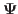 に対して，何らかの特別な形を仮定する。
pdMatクラスには，以下のコンストラクタが標準装備されている。
これらのコンストラクタで指定された pdMat オブジェクトは，関数 lme() に対して引数 random を渡す。
例として，データ Orthodont について，
なるモデルをあてはめてみよう。
pdDiag を用いて以下のようにモデルを更新してみる。
> fm6 <- lme(distance ~ I(age - 11), data = Orthodont) > fm7 <- update(fm6, fixed = distance ~ Sex * I(age - 11)) > fm10 <- update(fm7, random = pdDiag(~I(age - 11)))
Orthodont は groupedData クラスなので，random においてグルーピングを宣言する必要はない。 もしグループ化構造と pdMat クラスの両方を random で指定したいのであれば，
> fm10 <- update(fm7, random = list(Subject = pdDiag(~I(age - 11))))
結果は以下の通り：
> summary(fm10)
Linear mixed-effects model fit by REML
Data: Orthodont
AIC BIC logLik
446.8426 465.3533 -216.4213
Random effects:
Formula: ~I(age - 11) | Subject
Structure: Diagonal
(Intercept) I(age - 11) Residual
StdDev: 1.830327 0.1803455 1.31004 ## <- 前者2つが独立になっている。
Fixed effects: distance ~ Sex + I(age - 11) + Sex:I(age - 11)
Value Std.Error DF t-value p-value
(Intercept) 24.968750 0.4860008 79 51.37595 0.0000
SexFemale -2.321023 0.7614169 25 -3.04829 0.0054
I(age - 11) 0.784375 0.0859995 79 9.12069 0.0000
SexFemale:I(age - 11) -0.304830 0.1347353 79 -2.26243 0.0264
Correlation:
(Intr) SexFml I(-11)
SexFemale -0.638
I(age - 11) 0.000 0.000
SexFemale:I(age - 11) 0.000 0.000 -0.638
Standardized Within-Group Residuals:
Min Q1 Med Q3 Max
-3.06658938 -0.39982538 0.02559617 0.43693649 3.85940304
Number of Observations: 108
Number of Groups: 27
> intervals(fm10)
Approximate 95% confidence intervals
Fixed effects:
lower est. upper
(Intercept) 24.0013897 24.9687500 25.93611031
SexFemale -3.8891901 -2.3210227 -0.75285537
I(age - 11) 0.6131972 0.7843750 0.95555276
SexFemale:I(age - 11) -0.5730135 -0.3048295 -0.03664554
attr(,"label")
[1] "Fixed effects:"
Random Effects:
Level: Subject
lower est. upper
sd((Intercept)) 1.33766885 1.8303270 2.5044291
sd(I(age - 11)) 0.05858523 0.1803455 0.5551653
Within-group standard error:
lower est. upper
1.084934 1.310040 1.581850
> anova(fm7, fm10)
Model df AIC BIC logLik Test L.Ratio p-value
fm7 1 15 458.9891 498.6550 -214.4946
fm10 2 7 446.8426 465.3533 -216.4213 1 vs 2 3.853495 0.8701
あるいは，age を因子型とみなして，次のようなモデルを考える。
> fm11 <- lme(distance ~ factor(age)-1, data = Orthodont)
> summary(fm11)
Linear mixed-effects model fit by REML
Data: Orthodont
AIC BIC logLik
461.3733 501.0392 -215.6867
Random effects:
Formula: ~factor(age) - 1 | Subject
Structure: General positive-definite
StdDev Corr
factor(age)8 2.3283848 fct()8 fc()10 fc()12
factor(age)10 2.0369847 0.693
factor(age)12 2.7265725 0.768 0.695
factor(age)14 2.6739501 0.649 0.832 0.850
Residual 0.7103124
Fixed effects: distance ~ factor(age) - 1
Value Std.Error DF t-value p-value
factor(age)8 22.18519 0.4684853 78 47.35513 0
factor(age)10 23.16667 0.4151684 78 55.80064 0
factor(age)12 24.64815 0.5422430 78 45.45591 0
factor(age)14 26.09259 0.5324490 78 49.00487 0
Correlation:
fct()8 fc()10 fc()12
factor(age)10 0.626
factor(age)12 0.711 0.635
factor(age)14 0.600 0.759 0.795
Standardized Within-Group Residuals:
Min Q1 Med Q3 Max
-1.63502985 -0.31750913 0.02383684 0.28193604 1.84108842
Number of Observations: 108
Number of Groups: 27
>
これを更新して，複合対称型構造をあてはめてみよう。
> fm12 <- update(fm11, random = pdCompSymm(~ factor(age) - 1))
> summary(fm12)
Linear mixed-effects model fit by REML
Data: Orthodont
AIC BIC logLik
457.1976 475.7084 -221.5988
Random effects:
Formula: ~factor(age) - 1 | Subject
Structure: Compound Symmetry
StdDev Corr
factor(age)8 2.4403515
factor(age)10 2.4403515 0.75
factor(age)12 2.4403515 0.75 0.75
factor(age)14 2.4403515 0.75 0.75 0.75
Residual 0.7667814
Fixed effects: distance ~ factor(age) - 1
Value Std.Error DF t-value p-value
factor(age)8 22.18519 0.4922838 78 45.06585 0
factor(age)10 23.16667 0.4922838 78 47.05958 0
factor(age)12 24.64815 0.4922838 78 50.06898 0
factor(age)14 26.09259 0.4922838 78 53.00315 0
Correlation:
fct()8 fc()10 fc()12
factor(age)10 0.682
factor(age)12 0.682 0.682
factor(age)14 0.682 0.682 0.682
Standardized Within-Group Residuals:
Min Q1 Med Q3 Max
-1.987867665 -0.279141378 0.008124215 0.214199471 1.979189957
Number of Observations: 108
Number of Groups: 27
pdBlocked コンストラクタは，pdIdent や pdSymm，pdCompSymm などを組み合わせて作ればよい。
例えば，
とかだったりすると，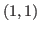 成分を pdIdent で， 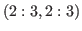 成分を pdCompSymm で表せばよい。 従って，
random = pdBlocked(list(pdIdent(~ 1), pdCompSymm(~ Sex - 1)))
ここまでのモデルでは，以下の2点を仮定していることに注意：
まず，グループごとの残差の箱ひげ図を描くことを考える。
> plot(fm7, Subject ~ resid(.), abline = 0)
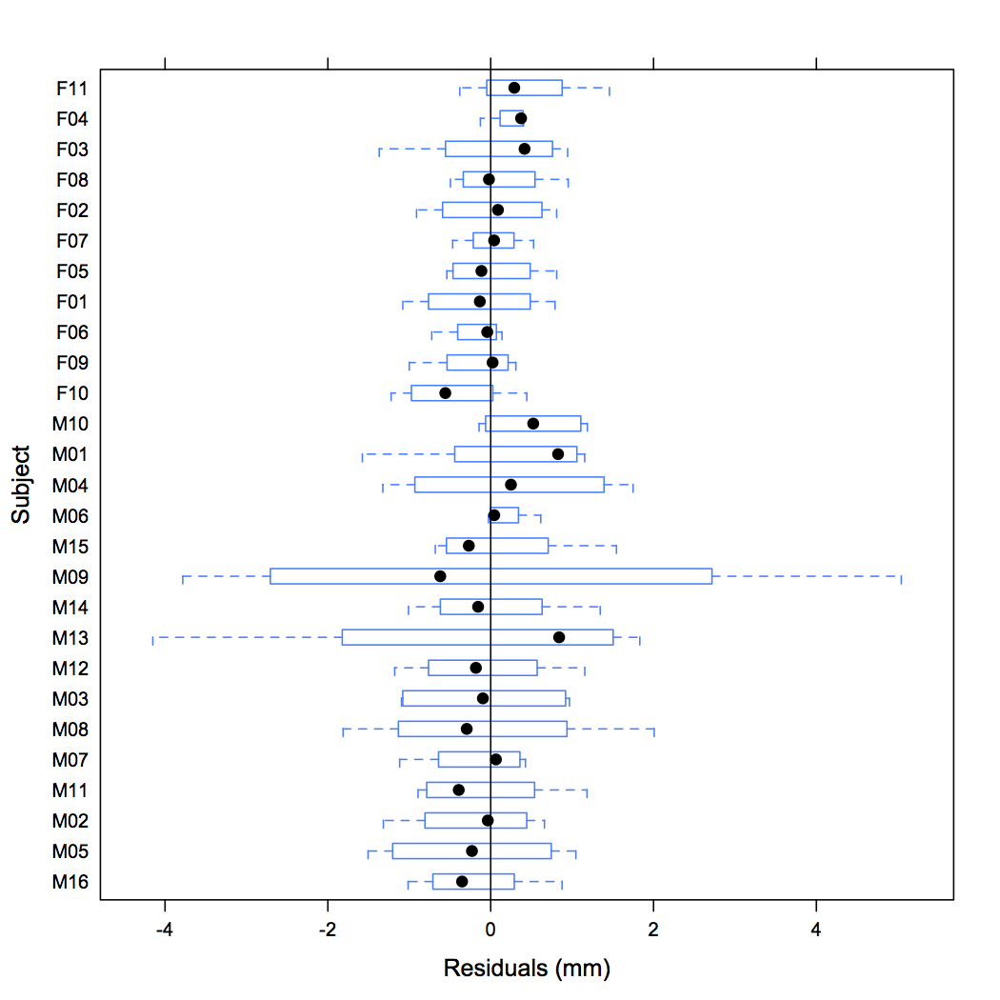
ゼロを中心に分布しているが，グループによって分散は一定でないようだ。 M09とM13の残差分散は特に大きめで，全体的に男子のほうが女子より大きめ。
あてはめ値と標準化残差のプロットを描いてみても，女子の残差分散が小さいことがよくわかる。
> plot(fm7, resid(., type = "p") ~ fitted(.) | Sex)
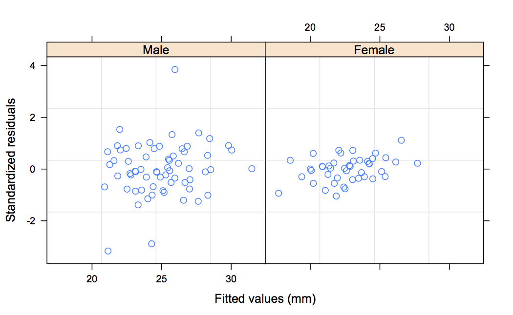
そこで，varIdent によってグループ内誤差の性差を考慮したモデルをあてはめてみる。
> fm13 <- update(fm7, weights = varIdent(form = ~ 1 | Sex))
> fm13
Linear mixed-effects model fit by REML
Data: Orthodont
Log-restricted-likelihood: -205.7612
Fixed: distance ~ Sex + I(age - 11) + Sex:I(age - 11)
(Intercept) SexFemale I(age - 11) SexFemale:I(age - 11)
24.9687500 -2.3210227 0.7843750 -0.3048295
Random effects:
Formula: ~I(age - 11) | Subject
Structure: General positive-definite, Log-Cholesky parametrization
StdDev Corr
(Intercept) 1.8549808 (Intr)
I(age - 11) 0.1565162 0.394
Residual 1.6295858
Variance function:
Structure: Different standard deviations per stratum
Formula: ~1 | Sex
Parameter estimates:
Male Female
1.0000000 0.4088461 ### <- 確かに女子のグループ内誤差分散のほうが小さい（SDの比なので注意）
Number of Observations: 108
Number of Groups: 27
あてはめ値と標準化残差を再度プロットしてみる。
> plot(fm13, resid(., type = "p") ~ fitted(.) | Sex, id = 0.05, adj = -0.3) ### <- 外れ値のidを記入，adjで位置を調整
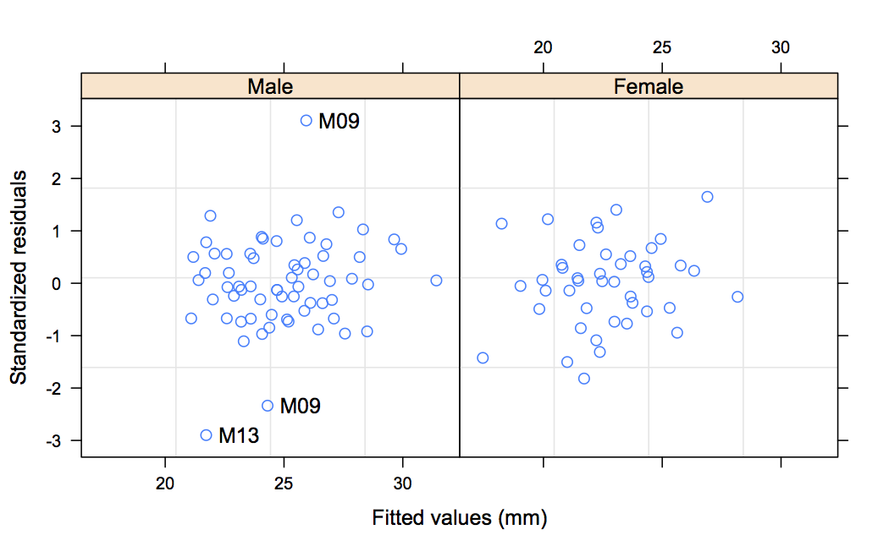
グループ内SDで標準化された残差のプロットでは，男女差がより少なくなっている。
おおむね標準化残差は小さく，あてはめはうまくいっているようだ。
確認のために，あてはめ値と観測値のプロットを描いておく。
> plot(fm13, distance ~ fitted(.), id = 0.05, adj = -0.3)
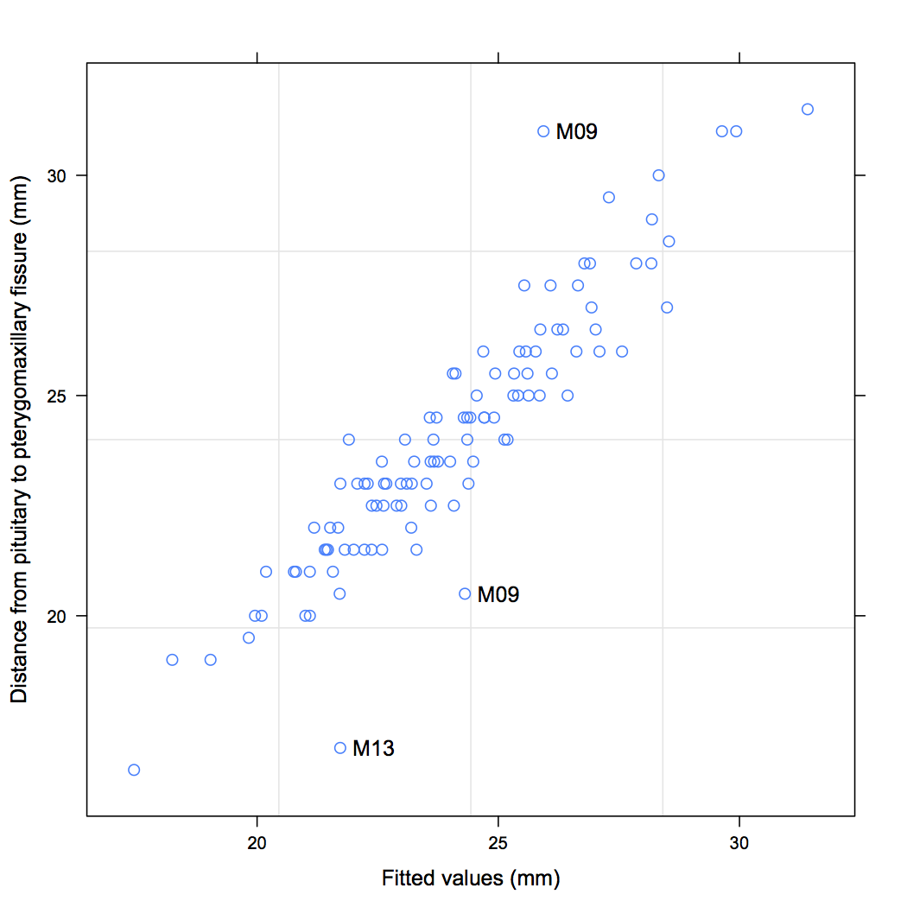
性別によるグループ内誤差不等分散を許すことがあてはまりをよくしたかチェックする。
Model df AIC BIC logLik Test L.Ratio p-value
fm7 1 8 448.5817 469.7368 -216.2908 ### <- 等分散モデル
fm13 2 9 429.5225 453.3220 -205.7612 1 vs 2 21.05918 <.0001 ### <- 不等分散モデル
次に，グループ内誤差の正規性の仮定を検討する。
> qqnorm(fm13, ~ resid(.) | Sex) ### <- ランダム係数を用いるなら ranef(.) にする
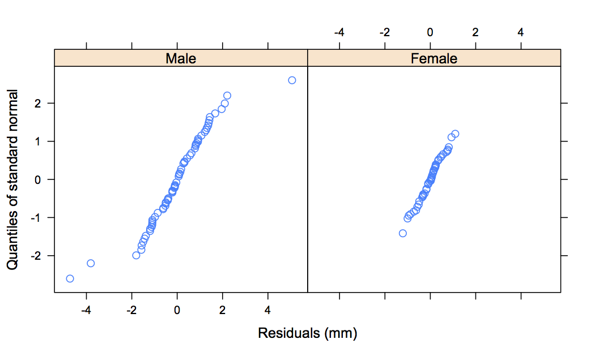
男子に3人の外れ値が見られるほかは，正規性の仮定は妥当だと考えられる。
今，残差をプロットするとゼロを中心とする周期 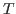 の周期的なパターンが見られたとする。 これは，コサイン派によって表すことができる。
このとき，
未知の を推定しなくてはいけないので，非線形なモデルである。 ここでは，とりあえず 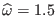 が得られているとする。
すると，以下のようにモデルをあてはめられる。
> fm14 <- update(fm13, fixed = . ~ . + cos(1.5*age) + sin(1.5*age))
> summary(fm14)
Linear mixed-effects model fit by REML
Data: Orthodont
AIC BIC logLik
435.1281 464.0028 -206.564
Random effects:
Formula: ~I(age - 11) | Subject
Structure: General positive-definite, Log-Cholesky parametrization
StdDev Corr
(Intercept) 1.8528787 (Intr)
I(age - 11) 0.1508201 0.408
Residual 1.6353544
Variance function:
Structure: Different standard deviations per stratum
Formula: ~1 | Sex
Parameter estimates:
Male Female
1.0000000 0.4241686
Fixed effects: distance ~ Sex + I(age - 11) + cos(1.5 * age) + sin(1.5 * age) + Sex:I(age - 11)
Value Std.Error DF t-value p-value
(Intercept) 24.952271 0.5084337 77 49.07674 0.0000
SexFemale -2.321023 0.7611839 25 -3.04923 0.0054
I(age - 11) 0.783916 0.1009503 77 7.76536 0.0000
cos(1.5 * age) 0.163600 0.4705060 77 0.34771 0.7290
sin(1.5 * age) 0.169165 0.4764843 77 0.35503 0.7235
SexFemale:I(age - 11) -0.304830 0.1184658 77 -2.57314 0.0120
Correlation:
(Intr) SexFml I(-11) c(1.*a s(1.*a
SexFemale -0.662
I(age - 11) 0.139 -0.093
cos(1.5 * age) -0.090 0.000 0.032
sin(1.5 * age) -0.090 0.000 -0.031 0.951
SexFemale:I(age - 11) -0.118 0.194 -0.818 0.000 0.000
Standardized Within-Group Residuals:
Min Q1 Med Q3 Max
-2.93262596 -0.52819045 0.03495114 0.50359608 3.11939383
Number of Observations: 108
Number of Groups: 27
切片と傾きのランダム係数について，正規プロットを描画する。
> qqnorm(fm13, ~ ranef(.), id = 0.10) ### <- ランダム係数のうち，絶対値が1-id/2標準正規四分位を超えるもの
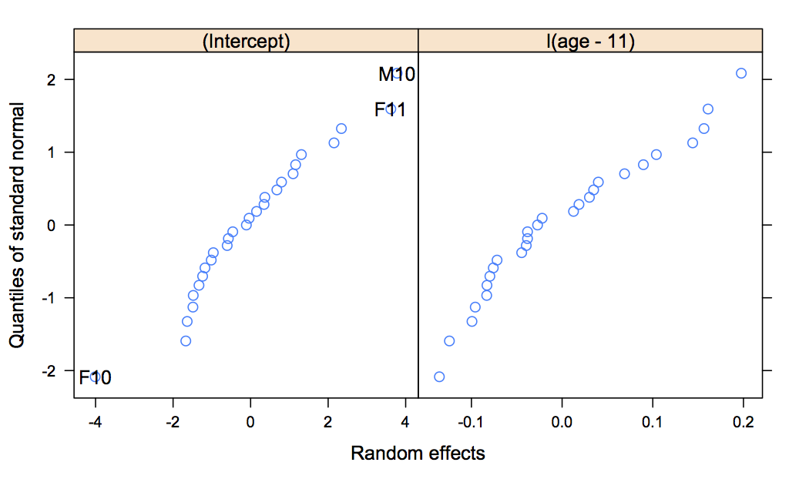
男女別に切片と傾きの散布図行列を描く。
> pairs(fm13, ~ ranef(.) | Sex)
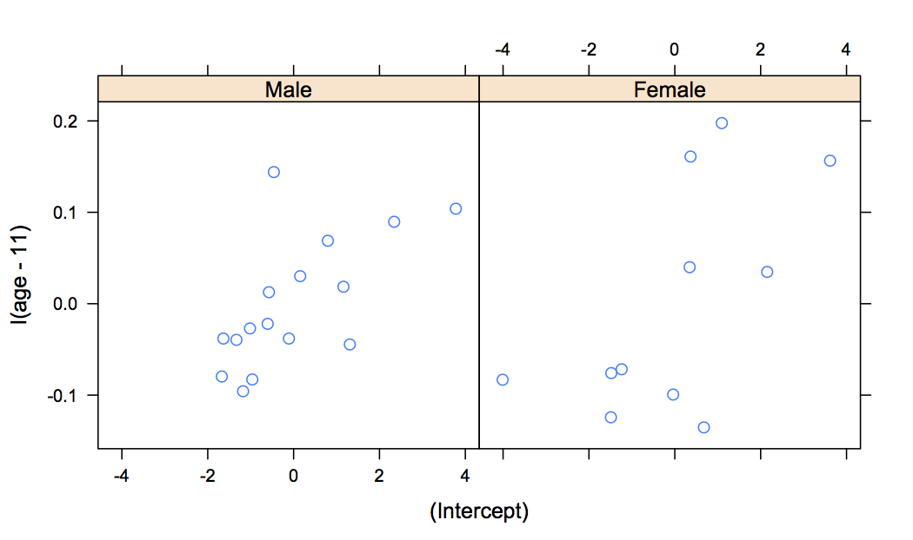
Taichi Okumura